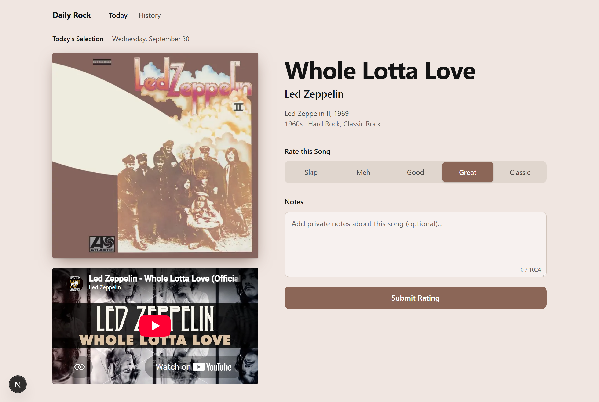

Today 頁：三個「不那麼工整」的方向
三個方向都保留你喜歡的部分：專輯封面當主角、背景跟著封面變色、按鈕用封面的顏色。差別在打破整齊的程度，由輕到重。用 Led Zeppelin II 當範例。

現在的版本為什麼看起來工整
- 每個元素都對齊同一條格線，左右兩欄完全對稱
- 所有東西都是直的、方的，沒有任何角度或重疊
- 間距全部一樣大，沒有哪裡特別擠或特別空
- 沒有「手」的痕跡：沒有手寫、沒有物件感
A
唱片從封套滑出來
改動最少

Whole Lotta Love
Led Zeppelin
Rate this Song
SkipMehGoodGreatClassic
Notes
Add private notes about this song (optional)...
Submit Rating
改了什麼
- 封面稍微歪一點，後面露出一張黑膠
- 播放音樂時黑膠會轉（開啟「減少動態」時不轉）
- 唱片圓心是封面的顏色
代價
- 變化最小，可能還是覺得太乾淨
- 手機上黑膠會被藏起來（空間不夠）
B
聽歌日記
中等：像你自己的手帳
SEP 30 · DAY 2
Whole Lotta Love
Led Zeppelin
Rate this Song
SkipMehGood
Great
Classic
Notes
That riff never gets old
Submit Rating
改了什麼
- 封面用膠帶貼在頁面上，播放器也斜斜地放
- 日期像蓋章，「DAY 2」是你聽到第幾首
- 評分是用筆圈起來的字
- 筆記寫在有橫線的卡片上，用手寫字體
代價
- 多一個字體（手寫字，只用在筆記）
- 風格比較可愛，可能不夠「搖滾」
- History 頁也要跟著改成日記感，工作量比 A 大
C
海報拼貼
最大膽
Side A · 1969 · Atlantic
Led Zeppelin
Whole Lotta Love
Skip Meh Good Great Classic
Add private notes about this song (optional)...
Submit Rating
改了什麼
- 歌名超大，直接壓在封面上
- 封面旁邊有直排的小字，像唱片側邊
- 播放器縮小、斜放在角落
- 評分是一整排大字，選中的那個變色加底線
代價
- 歌名很長時（例如 I Bet You Look Good on the Dancefloor）要另外處理
- 手機上很難保留這種重疊效果
- 播放器變小，看影片不方便